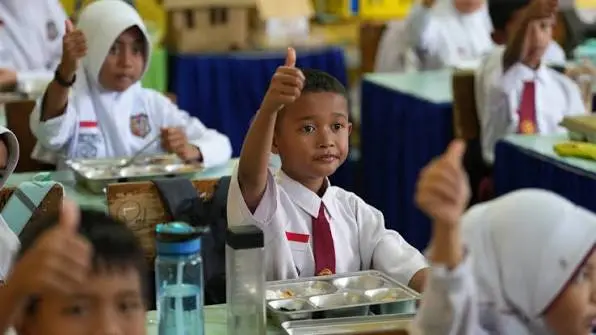

Prabowo Subianto Djojohadikusumo (lahir 17 Oktober 1951) adalah seorang politikus, pengusaha, dan pensiunan perwira militer Indonesia yang menjabat sebagai Presiden Indonesia kedelapan sejak tahun 2024. Sebelumnya, ia menjabat sebagai Menteri Pertahanan ke-26 di bawah Presiden Joko Widodo dari tahun 2019 hingga 2024.
Prabowo adalah presiden ketiga Indonesia yang memiliki latar belakang militer setelah Soeharto dan Susilo Bambang Yudhoyono, dan merupakan presiden tertua kedua dalam sejarah Indonesia setelah Soeharto sebagai presiden RI sejak 1968 hingga 1998.
Lihat Resume / CVPengalaman
Pendidikan
Fort Bragg, Amerika Serikat (1985)
Program Unggulan

ViewMBG
Makan Bergizi Gratis (MBG) adalah program prioritas nasional yang diinisiasi untuk memberikan dukungan gizi seimbang secara rutin kepada anak sekolah, santri, dan ibu hamil guna meningkatkan kualitas sumber daya manusia Indonesia sejak dini sekaligus menekan angka stunting secara nasional.

Koperasi Desa
Kopdes Merah Putih adalah program pembentukan Koperasi Desa/Kelurahan Merah Putih oleh pemerintah Indonesia untuk memperkuat ekonomi kerakyatan di tingkat desa dan kelurahan